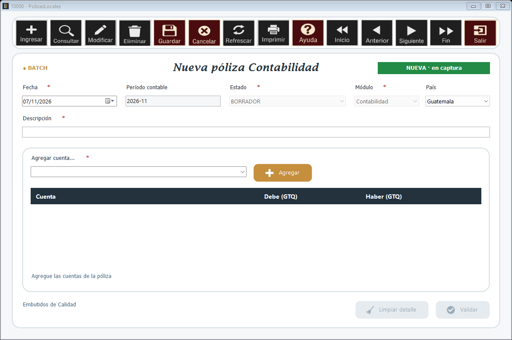

Ventana para capturar el encabezado y el detalle de una póliza. Una póliza en BORRADOR se puede modificar; una vez validada ya no. Arriba a la derecha se ve si la póliza es nueva o cuál se está editando, y arriba a la izquierda si el módulo trabaja en LINEA o en BATCH.

Fecha y Período contable de la póliza, su Estado, el Módulo que la origina, el País (define la moneda de los importes) y la Descripción.
1. Elija una cuenta de detalle en Agregar cuenta... y presione Agregar.
2. Escriba el importe en la columna Debe o en la columna Haber.
3. Repita para cada cuenta. Limpiar detalle quita todas las líneas.
Abajo se muestran el total del debe, el total del haber y la diferencia. La póliza debe quedar cuadrada (diferencia 0.00) y tener al menos dos líneas.
Presione Validar para grabarla. Si el módulo trabaja en LINEA, los saldos se actualizan en ese momento; si trabaja en BATCH, quedan pendientes para la actualización de saldos.
La barra de botones de arriba es la del Navegador: permite consultar, recorrer e imprimir las pólizas, y Salir cierra la ventana.